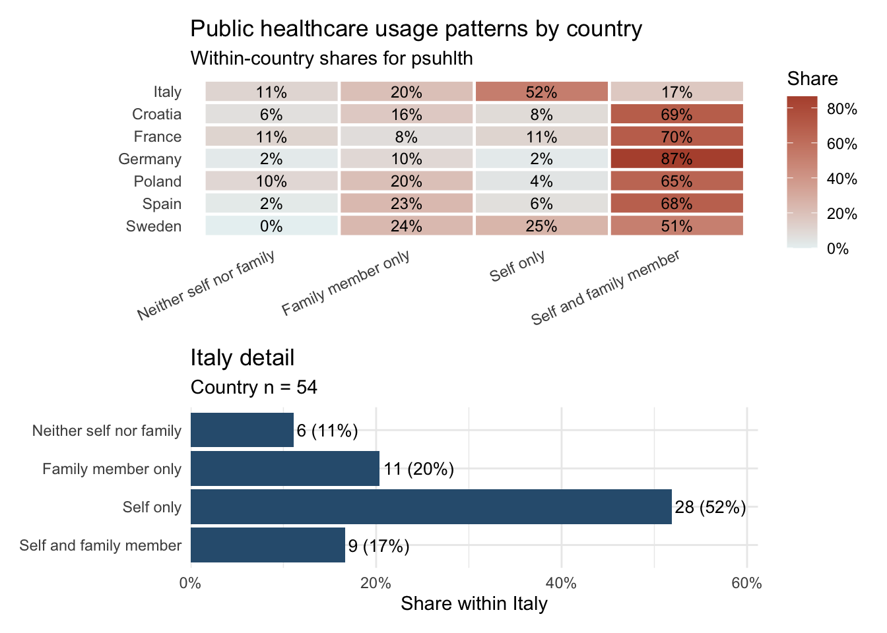
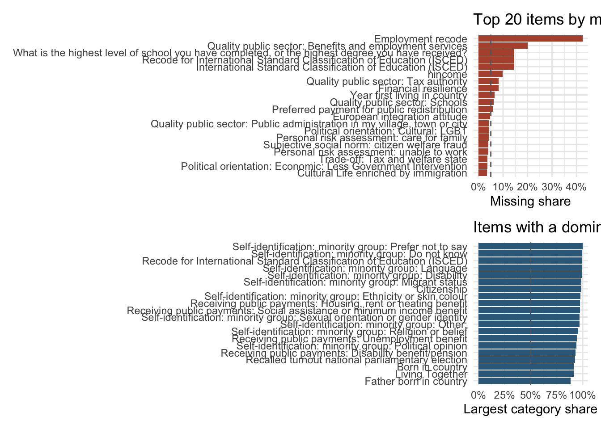
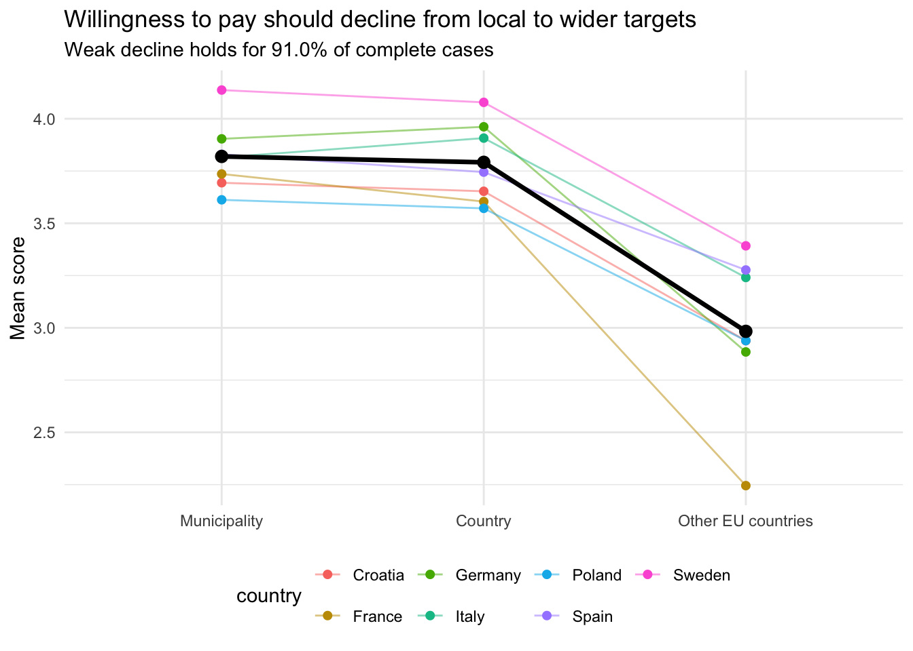
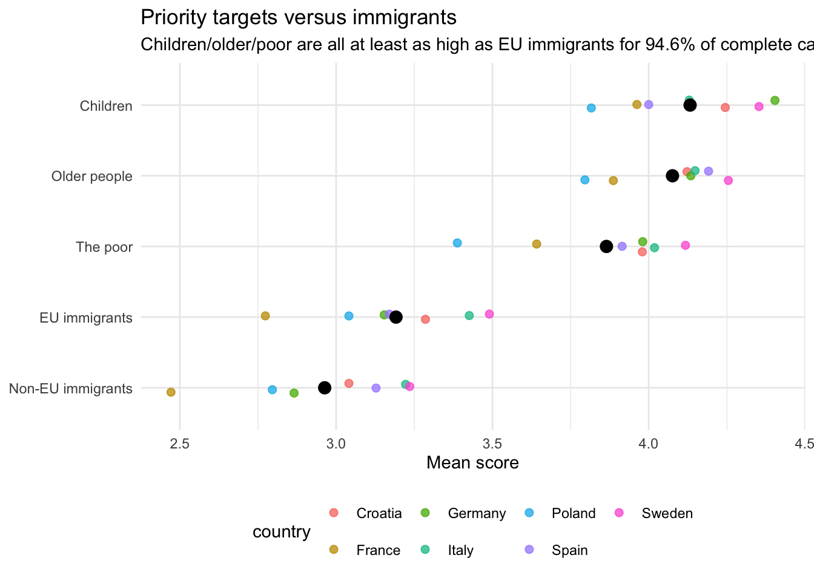
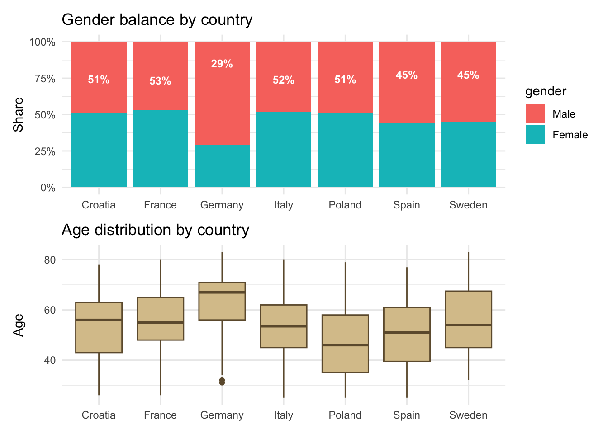
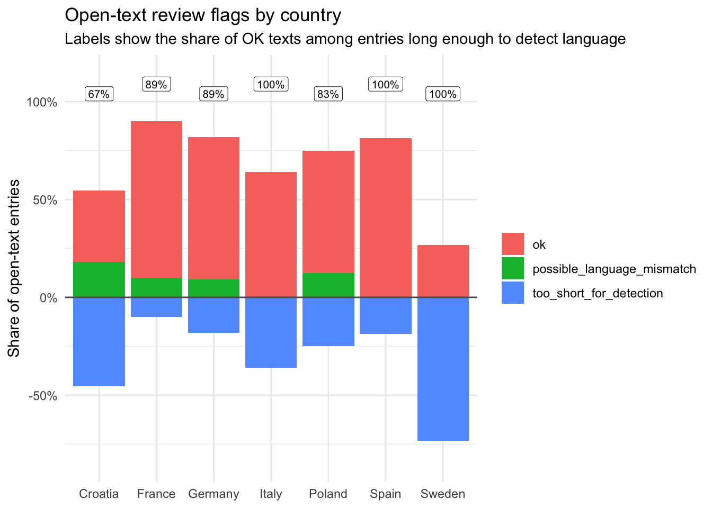
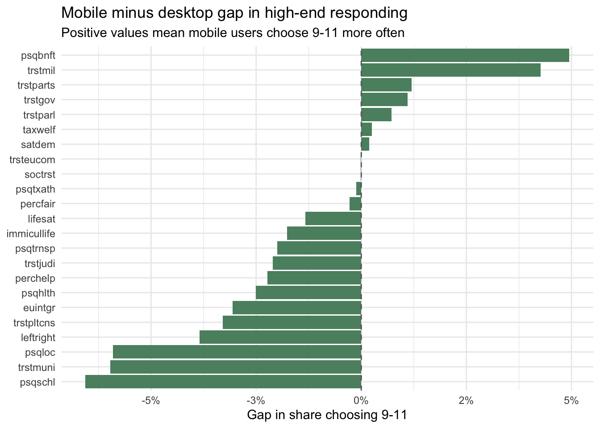
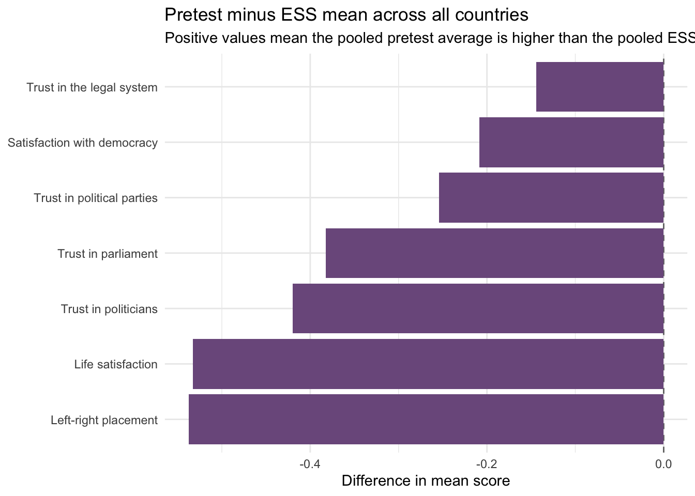
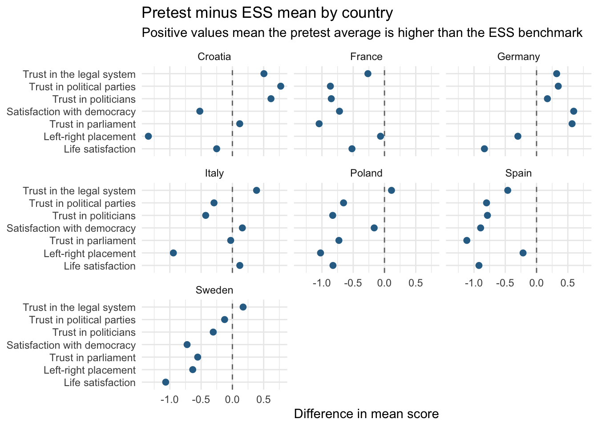

| country | n | share |
|---|---|---|
| Croatia | 49 | 13.8% |
| France | 53 | 14.9% |
| Germany | 52 | 14.6% |
| Italy | 54 | 15.2% |
| Poland | 49 | 13.8% |
| Spain | 47 | 13.2% |
| Sweden | 51 | 14.4% |
Univariate Checks for the PEPS-Y Pretest
1 Setup
This report reads the pretest .sav file, cleans labelled nonresponse codes, and answers the checks listed in univariate_checks.docx. The report assumes that cld3 is installed and uses it for the open-text language check.
2 Data Coverage
The .sav file contains 355 rows. Of those, 355 have a valid country code and are used for the checks below. The remaining rows appear to be empty placeholders rather than completed interviews.
3 Public Healthcare Usage by Country
Because psuhlth is the item of immediate interest, this section isolates the public-healthcare usage question and shows how its response pattern differs across countries. The heatmap gives the within-country distribution for each answer category, and the Italy panel makes the national pattern easier to inspect directly.

In Italy, the largest psuhlth category is Self only at 51.9%, while the pooled sample is led by Self and family member at 60.6%. Italy’s Self and family member share is only 16.7%, which is much lower than the pooled figure of 60.6%. That suggests the Italian interviews are less likely than the other countries to report joint respondent-plus-family contact with public healthcare, and more likely to report respondent-only contact. Given that the country sample is small, this should be treated as a signal to inspect rather than as a stable population pattern.
| country | n - Neither self nor family | n - Family member only | n - Self only | n - Self and family member | share - Neither self nor family | share - Family member only | share - Self only | share - Self and family member |
|---|---|---|---|---|---|---|---|---|
| Croatia | 3 | 8 | 4 | 34 | 6.1% | 16.3% | 8.2% | 69.4% |
| France | 6 | 4 | 6 | 37 | 11.3% | 7.5% | 11.3% | 69.8% |
| Germany | 1 | 5 | 1 | 45 | 1.9% | 9.6% | 1.9% | 86.5% |
| Italy | 6 | 11 | 28 | 9 | 11.1% | 20.4% | 51.9% | 16.7% |
| Poland | 5 | 10 | 2 | 32 | 10.2% | 20.4% | 4.1% | 65.3% |
| Spain | 1 | 11 | 3 | 32 | 2.1% | 23.4% | 6.4% | 68.1% |
| Sweden | 0 | 12 | 13 | 26 | 0.0% | 23.5% | 25.5% | 51.0% |
4 Missingness and Dominant Categories
This section checks two basic risks first: whether any item has more than 5% missing data, and whether any item is so concentrated that one answer category takes more than half the responses. For routed items, missingness is calculated only among respondents who should have received the question. In particular, plsolfund is evaluated only where plsolfund_Ask == "Yes".

| label | missing_pct |
|---|---|
| Employment recode | 42.5% |
| Quality public sector: Benefits and employment services | 20.0% |
| What is the highest level of school you have completed, or the highest degree you have received? | 14.6% |
| Recode for International Standard Classification of Education (ISCED) | 14.6% |
| International Standard Classification of Education (ISCED) | 14.6% |
| hincome | 9.9% |
| Quality public sector: Tax authority | 8.2% |
| Financial resilience | 8.2% |
| Year first living in country | 6.5% |
| Quality public sector: Schools | 6.2% |
| Preferred payment for public redistribution | 5.8% |
5 Core Attitudes and the Solidarity Batteries
This section focuses on the substantive items. The main question is whether the solidarity batteries behave in the direction expected by the task brief.


| label | mean | median | missing_pct |
|---|---|---|---|
| Crisis perception of country's society | 2.954674221 | 3 | 0.6% |
| Cultural Life enriched by immigration | 6.749271137 | 7 | 3.4% |
| Current Tax Assessment: High income | 2.582132565 | 2 | 2.3% |
| Current Tax Assessment: Low income | 3.710982659 | 4 | 2.5% |
| Current Tax Assessment: Middle income | 3.700000000 | 4 | 1.4% |
| Current economic assessment: household | 3.037572254 | 3 | 2.5% |
| Current economic assessment: national economy | 2.310144928 | 2 | 2.8% |
| Deservingness: attitude | 3.416901408 | 3 | 0.0% |
| Deservingness: control | 2.501408451 | 2 | 0.0% |
| Deservingness: identity | 2.391549296 | 2 | 0.0% |
| Deservingness: need | 3.464788732 | 4 | 0.0% |
| Deservingness: reciprocity | 3.036619718 | 3 | 0.0% |
| European integration attitude | 6.565088757 | 7 | 4.8% |
| Friends network: ethnicity | 1.707042254 | 2 | 0.0% |
| Friends network: other politics | 2.090140845 | 2 | 0.0% |
| Friends networks: 10 years older | 1.816901408 | 2 | 0.0% |
| Friends networks: 10 years younger | 1.898591549 | 2 | 0.0% |
| Friends networks: poor | 1.988732394 | 2 | 0.0% |
| Friends networks: rich | 2.098591549 | 2 | 0.0% |
| Governmental Scope: Standard of Living immigrants from EU countries | 5.952112676 | 6 | 0.0% |
| Governmental Scope: Standard of Living immigrants from non-EU countries | 5.388732394 | 5 | 0.0% |
| Governmental Scope: Standard of Living: Children | 8.292957746 | 9 | 0.0% |
| Governmental Scope: Standard of Living: older people | 8.143661972 | 8 | 0.0% |
| Governmental Scope: Standard of Living: the poor | 7.385915493 | 8 | 0.0% |
| Helping norm: descriptive | 3.149295775 | 3 | 0.0% |
| Identification: Country | 3.188732394 | 3 | 0.0% |
| Identification: European Union | 2.802816901 | 3 | 0.0% |
| Identification: Municipality | 2.954929577 | 3 | 0.0% |
| Identification: World | 2.591549296 | 3 | 0.0% |
| Immigration: economic migrants | 3.268011527 | 3 | 2.3% |
| Immigration: forced migrants | 3.069364162 | 3 | 2.5% |
| Left-right self-placement | 5.376436782 | 5 | 2.0% |
| Life satisfaction | 7.642253521 | 8 | 0.0% |
| Loneliness: feeling isolated | 2.616901408 | 3 | 0.0% |
| Loneliness: feeling left out | 2.608450704 | 3 | 0.0% |
| Loneliness: lack of companionship | 2.461971831 | 3 | 0.0% |
| Perceived fairness | 6.292957746 | 6 | 0.0% |
| Perceived helpfulness | 4.946478873 | 5 | 0.0% |
| Personal risk assessment: care for family | 10.967647059 | 2 | 4.2% |
| Personal risk assessment: not able to cope | 5.367521368 | 1 | 1.1% |
| Personal risk assessment: unable to work | 10.683284457 | 2 | 3.9% |
| Personal risk assessment: unemployment | 18.422413793 | 1 | 2.0% |
| Political discussions: family and friends | 4.394366197 | 4 | 0.0% |
| Political discussions: work colleagues | 20.364406780 | 4 | 0.3% |
| Political interest | 3.045070423 | 3 | 0.0% |
| Political orientation: Cultural: Gender roles | 2.020172911 | 2 | 2.3% |
| Political orientation: Cultural: LGBT | 4.388235294 | 5 | 4.2% |
| Political orientation: Economic: Less Government Intervention | 3.011695906 | 3 | 3.7% |
| Political orientation: Economic: Reduce Income Differences | 3.375000000 | 4 | 3.1% |
| Political trust: armed forces | 7.048158640 | 8 | 0.6% |
| Political trust: european commission | 5.078034682 | 5 | 2.5% |
| Political trust: legal system | 6.192634561 | 7 | 0.6% |
| Political trust: local authorities | 5.861189802 | 6 | 0.6% |
| Political trust: national government | 4.752840909 | 5 | 0.8% |
| Political trust: national parliament | 4.997159091 | 5 | 0.8% |
| Political trust: political parties | 4.113314448 | 4 | 0.6% |
| Political trust: politicians | 3.991477273 | 4 | 0.8% |
| Preferred payment for public redistribution | 2.132258065 | 2 | 5.8% |
| Public service: efficiency | 2.298591549 | 2 | 0.0% |
| Public service: fair treatment | 3.312676056 | 3 | 0.0% |
| Public service: integrity | 2.856338028 | 3 | 0.0% |
| Public service: overall satisfaction | 2.968571429 | 3 | 1.4% |
| Public service: prompt help | 2.526760563 | 2 | 0.0% |
| Public service: usage in last 12 months: health care | 3.309859155 | 4 | 0.0% |
| Public service: usage in last 12 months: public transport | 3.059154930 | 4 | 0.0% |
| Public service: usage in last 12 months: school | 1.698591549 | 1 | 0.0% |
| Public service: usage in last 12 months: social benefits and unemployment services | 1.391549296 | 1 | 0.0% |
| Public service: usage in last 12 months: tax authority | 1.676056338 | 1 | 0.0% |
| Quality public sector: Benefits and employment services | 5.045774648 | 5 | 20.0% |
| Quality public sector: Public administration in my village, town or city | 5.947058824 | 6 | 4.2% |
| Quality public sector: Public health care | 5.772727273 | 6 | 0.8% |
| Quality public sector: Public transport | 6.100574713 | 6 | 2.0% |
| Quality public sector: Schools | 5.981981982 | 6 | 6.2% |
| Quality public sector: Tax authority | 6.015337423 | 6 | 8.2% |
| Recalled turnout national parliamentary election | 1.093220339 | 1 | 0.3% |
| Receiving public payments: Child, family or care allowance/benefit | 1.828169014 | 2 | 0.0% |
| Receiving public payments: Disability benefit/pension | 1.932011331 | 2 | 0.6% |
| Receiving public payments: Housing, rent or heating benefit | 1.974576271 | 2 | 0.3% |
| Receiving public payments: Retirement pension | 1.637393768 | 2 | 0.6% |
| Receiving public payments: Social assistance or minimum income benefit | 1.971830986 | 2 | 0.0% |
| Receiving public payments: Unemployment benefit | 1.943502825 | 2 | 0.3% |
| Redistribution norm: descriptive | 2.878873239 | 3 | 0.0% |
| Satisfaction with democracy in country of interview | 5.777142857 | 6 | 1.4% |
| Self-identification: minority group: Disability | 0.011267606 | 0 | 0.0% |
| Self-identification: minority group: Do not know | 0.002816901 | 0 | 0.0% |
| Self-identification: minority group: Ethnicity or skin colour | 0.022535211 | 0 | 0.0% |
| Self-identification: minority group: Language | 0.011267606 | 0 | 0.0% |
| Self-identification: minority group: Migrant status | 0.014084507 | 0 | 0.0% |
| Self-identification: minority group: None | 0.819718310 | 1 | 0.0% |
| Self-identification: minority group: Other: | 0.030985915 | 0 | 0.0% |
| Self-identification: minority group: Political opinion | 0.059154930 | 0 | 0.0% |
| Self-identification: minority group: Prefer not to say | 0.000000000 | 0 | 0.0% |
| Self-identification: minority group: Religion or belief | 0.042253521 | 0 | 0.0% |
| Self-identification: minority group: Sexual orientation or gender identity | 0.030985915 | 0 | 0.0% |
| Self-placement: status ladder | 6.200000000 | 6 | 0.0% |
| Social trust and helping norm: injuctive | 5.600000000 | 5 | 0.0% |
| Solidarity game | 38.509859155 | 50 | 0.0% |
| Subjective social norm: citizen tax morale | 1.459537572 | 1 | 2.5% |
| Subjective social norm: citizen welfare fraud | 1.475073314 | 1 | 3.9% |
| Trade-off: Tax and welfare state | 5.690058480 | 6 | 3.7% |
| Willingness to pay for public redistribution: EU | 2.983098592 | 3 | 0.0% |
| Willingness to pay for public redistribution: children | 4.132394366 | 4 | 0.0% |
| Willingness to pay for public redistribution: country | 3.791549296 | 4 | 0.0% |
| Willingness to pay for public redistribution: eu immigrants | 3.191549296 | 3 | 0.0% |
| Willingness to pay for public redistribution: municipal | 3.819718310 | 4 | 0.0% |
| Willingness to pay for public redistribution: non-eu immigrants | 2.963380282 | 3 | 0.0% |
| Willingness to pay for public redistribution: older people | 4.076056338 | 4 | 0.0% |
| Willingness to pay for public redistribution: poor | 3.864788732 | 4 | 0.0% |
6 Sociodemographic Alignment
This section checks whether the realized pretest sample looks obviously skewed in gender, age, or income. These are not population benchmarks, only simple internal warning flags.

| country | n | female_share | male_share | median_age | median_income_decile |
|---|---|---|---|---|---|
| Croatia | 49 | 51.0% | 49.0% | 56.0 | 10 |
| France | 53 | 52.8% | 47.2% | 55.0 | 9 |
| Germany | 52 | 28.8% | 69.2% | 67.0 | 10 |
| Italy | 54 | 51.9% | 48.1% | 53.5 | 9 |
| Poland | 49 | 51.0% | 49.0% | 46.0 | 10 |
| Spain | 47 | 44.7% | 55.3% | 51.0 | 10 |
| Sweden | 51 | 45.1% | 54.9% | 54.0 | 10 |
7 Open-Text Language Check
The task brief asks whether open-text entries are written in the correct country language. Here the report checks the unified vote-open field and the final comment field, then flags entries whose detected language does not match the country.

| country | respondent_id | text_field | detected_language | expected_language | text |
|---|---|---|---|---|---|
| Croatia | +EgmQYcnBmDvJykZ4e6S3L3gRnA7vaIZrWzsV/5CcGAXTcNVX7xxI1fhyDtVwSbE | comment | NA | Croatian | ne |
| Croatia | +LXb9KWoVCurVRn3s5odDYMgYUxNvUw7rrRjOXNIZQYNupQLcnJFyJn5FF3FOzDn | comment | NA | Croatian | Ne |
| Sweden | +NDrewV9CA6kd3/QbEbpe6Hfdv+BIdSAyLbAXqJ1x/U8Dbvznt20XC3zcoSZ9qWB | voteprsp_open | NA | Swedish | Socialdemokraterna |
| Italy | 0Kok1vlEURNUk/laQDn8QNsZarJYwpBnWhPQNYpyMSz4IXUYV5v9baFz++/aQAqg | comment | NA | Italian | Troppe simili |
| Sweden | 49eGy7zGIySlBpUuAq2IKbkpl0r7TvNZ7z1SkNQPd6HJ5vE8DCBNONtxugte3kY3 | voteprsp_open | NA | Swedish | Socialdemokraterna |
| Croatia | 7DUiovlTNlvIfUN5YdJYjzpuBYkrA1RJR9GGu9tTtGeGTPwwGdyDlAlgfE4CUNJf | comment | NA | Croatian | niste uklucili kljucno pitanje: -socijalna davanja DA onima koji su siromašni jer NE mogu raditi ( hendikepirani, bolesni..) -socijalna naknada NE onima koji Ne ŽELE raditi |
| Italy | 7ZzafVNmZKXI0Sy/0krncCsUfMGFpXlrRodfJ+afXsqYKIuArfBcjhwEX1AOk+XN | comment | NA | Italian | . |
| Croatia | 8WQEu5PptoWOGcI6V/xpKghO2r2FunmmRfLxAuzzTr22KpqyV/wqnYGVH3GO/3+Z | voteprsp_open | NA | Croatian | Fokus |
| France | a0BZASsTzajGOYk6LCG27Fazf5IAdH9MrdG5Z/UbnGKkaUVF/ihj9qD+EPtxPwrL | comment | NA | French | MCC |
| Italy | AtZ2g4wMzXaK5NgKXxdCAmVAHakiM7YC4/hqgcFXXMWM7J4Dy9Z7UAX67ABy17qW | comment | NA | Italian | Tutto ok |
| Sweden | AVr+vj7m1+tayt/BY8OhhwjPhgncOubLQFpEWgHBXzJ0OG+okM9iom2FqH5/UTW5 | voteprsp_open | NA | Swedish | Socialdemokratiska arbetarepartiet |
| Sweden | BqGDGudrXVQdPbK71FfHwzXIrvPFcDYsmb37Yur27ubWQ0i1ojSctSaAjBcYOwuE | voteprsp_open | NA | Swedish | Socialdemokraterna |
| Italy | cpqMEz0MLQyKmKOFe1epxx67fbIKuH8V66D8cs5/ito/wGbBWS2BJQosonk/L6ho | voteprsp_open | NA | Italian | Rifondazione comunista |
| Germany | dR9D2PsBxiSAe0lB28ZXFRTvUtKD92/FZAlq60hasjnxo1IQbdDV57RTULABTSH0EC0gQ90Yj72ofGXVablLGg== | voteprsp_open | NA | German | Die Partei |
| Germany | dR9D2PsBxiSAe0lB28ZXFRTvUtKD92/FZAlq60hasjnxo1IQbdDV57RTULABTSH0EC0gQ90Yj72ofGXVablLGg== | comment | NA | German | Nein |
| Sweden | FdH2QDDj1OcRN11bmaaNyvKD5sNP4gMDaz38nQcAz4bpKztIBCUxxcnNhGwFe+5k | voteprsp_open | NA | Swedish | Socialdemokraterna |
| Italy | G6VvUjht/NM71nFZRjoUlIP8P2C0iIJax2SGXEwEDB++SGbPsi7md+NF0wit4noj | voteprsp_open | NA | Italian | AVS |
| Italy | G6VvUjht/NM71nFZRjoUlIP8P2C0iIJax2SGXEwEDB++SGbPsi7md+NF0wit4noj | comment | NA | Italian | no |
| Sweden | H8yGBklyJSntfYa82c7ReUR+c512z+p1pjo1QvSeaV/2teP0YGNn+YlXeB5mGxJB | voteprsp_open | NA | Swedish | Socialdemokraterna |
| Sweden | hrxZhx2i8X8n3/oDYxLPz8ABzFfoz30zegGfM5SH4M/8Lnez0rwTyO/rpjAiPmPV | voteprsp_open | NA | Swedish | Socialdemokraterna |
| Sweden | jEkqLCpZUmvYtvfNeaz2MsrlAMKqZmXJArincRZr914pJKk0DUvvoWFrG5c40zWg | voteprsp_open | NA | Swedish | Socialdemokraterna |
| Sweden | jvKCOq700RxgI5OnGg1dnSbbVQsM4w54HRAORkY12Z1/c/bvenmCjhWZT7wMtPaX | voteprsp_open | NA | Swedish | Socialdemokraterna |
| France | lJufQmjrg0A76lLBj3oyt6avW12kyEdOvoqy0f/n+r9ssgm0ZOQZlnbX70UjOemX | voteprsp_open | NA | French | la france humaniste |
| Poland | lOhEKXyzvruqdc1QxZYfdxMhftJocAB1azM51VIA8NKIoyv638SCeFeRf2Q+jftK | comment | NA | Polish | Nie |
| Sweden | MEKbmTAX/ME4441M1F4RBGyjPplAw+LNsK7QwEXcKGjKWt9ND/65bvU90sLoWuie | voteprsp_open | NA | Swedish | Sverigedemokraterna |
8 Mobile versus Desktop
The task brief also asks whether mobile users behave differently on long 11-point scales. To check that, the report stacks all 11-point items into one long file and compares mobile and desktop users on high-end responding.

| variable | mean_gap_mobile_minus_desktop | high_gap_mobile_minus_desktop |
|---|---|---|
| euintgr | 18.6% | -3.1% |
| immicullife | 1.4% | -1.8% |
| leftright | -7.6% | -3.8% |
| lifesat | 5.4% | -1.3% |
| percfair | 13.5% | -0.3% |
| perchelp | 17.4% | -2.2% |
| psqbnft | 21.0% | 4.9% |
| psqhlth | -6.1% | -2.5% |
| psqloc | -4.4% | -5.9% |
| psqschl | 10.5% | -6.6% |
| psqtrnsp | 27.8% | -2.0% |
| psqtxath | 6.4% | -0.1% |
| satdem | 41.3% | 0.2% |
| soctrst | 0.5% | 0.0% |
| taxwelf | 28.0% | 0.3% |
| trsteucom | 3.9% | 0.0% |
| trstgov | 13.6% | 1.1% |
| trstjudi | 49.5% | -2.1% |
| trstmil | 4.8% | 4.3% |
| trstmuni | -21.6% | -6.0% |
| trstparl | 13.5% | 0.7% |
| trstparts | 25.3% | 1.2% |
| trstpltcns | 25.4% | -3.3% |
9 ESS Comparison
The task brief asks for a comparison to ESS benchmarks. This section keeps the comparison deliberately simple and only uses items that are clearly comparable across the pretest and ESS. For the matched ESS items, the original ESS 0-10 scale is shifted to 1-11 so that it aligns with the pretest coding.


| item_label | pretest_mean | ess_mean | mean_gap | pretest_n | ess_n |
|---|---|---|---|---|---|
| Left-right placement | 5.38 | 5.91 | -0.54 | 348 | 11575 |
| Life satisfaction | 7.64 | 8.18 | -0.53 | 355 | 13016 |
| Satisfaction with democracy | 5.78 | 5.99 | -0.21 | 350 | 12793 |
| Trust in parliament | 5.00 | 5.38 | -0.38 | 352 | 12884 |
| Trust in political parties | 4.11 | 4.37 | -0.25 | 353 | 12944 |
| Trust in politicians | 3.99 | 4.41 | -0.42 | 352 | 12981 |
| Trust in the legal system | 6.19 | 6.34 | -0.14 | 353 | 12918 |
| item_label | Croatia | France | Germany | Italy | Poland | Spain | Sweden |
|---|---|---|---|---|---|---|---|
| Left-right placement | -1.34 | -0.06 | -0.30 | -0.94 | -1.02 | -0.22 | -0.63 |
| Life satisfaction | -0.25 | -0.52 | -0.83 | 0.12 | -0.82 | -0.92 | -1.07 |
| Satisfaction with democracy | -0.52 | -0.72 | 0.59 | 0.16 | -0.16 | -0.89 | -0.72 |
| Trust in parliament | 0.12 | -1.04 | 0.57 | -0.03 | -0.73 | -1.11 | -0.55 |
| Trust in political parties | 0.77 | -0.86 | 0.35 | -0.29 | -0.65 | -0.80 | -0.12 |
| Trust in politicians | 0.62 | -0.85 | 0.17 | -0.43 | -0.83 | -0.79 | -0.31 |
| Trust in the legal system | 0.50 | -0.26 | 0.32 | 0.39 | 0.11 | -0.46 | 0.17 |